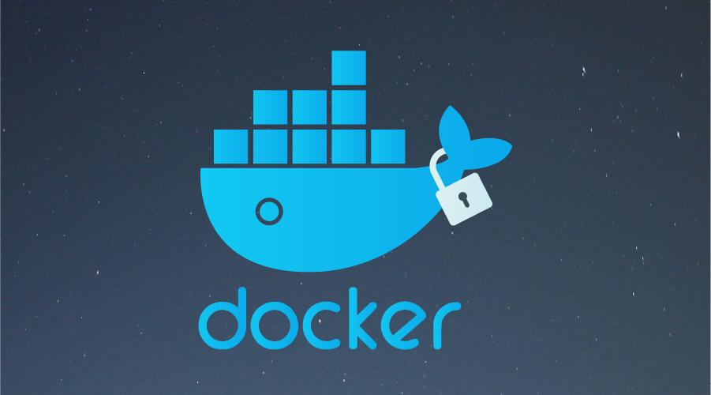
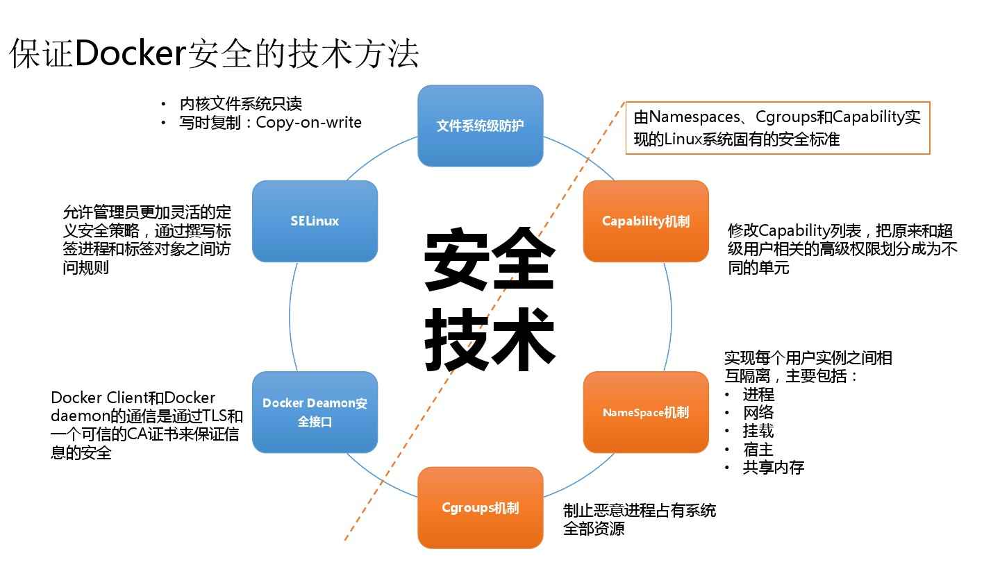
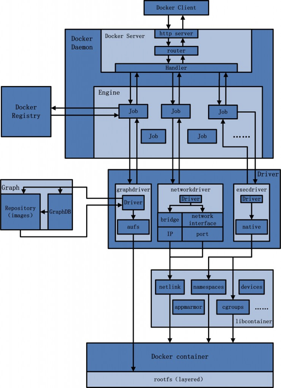

我们既要了解 Docker 安全相关的知识，也要了解其底层的实现细节。
- 引用来自Docker 从入门到实践 => 侵权删除

1. 安全纪要
总体来看，Docker 容器还是十分安全的，特别是在容器内不使用 root 权限来运行进程的话。

1.1 内核命名空间
Docker 容器和 LXC 容器很相似，所提供的安全特性也差不多。当用 docker run 启动一个容器时，在后台 Docker 为容器创建了一个独立的命名空间和控制组集合。命名空间提供了最基础也是最直接的隔离，在容器中运行的进程不会被运行在主机上的进程和其它容器发现和作用。
每个容器都有自己独有的网络栈，意味着它们不能访问其他容器的 sockets 或接口。不过，如果主机系统上做了相应的设置，容器可以像跟主机交互一样的和其他容器交互。当指定公共端口或使用 links 来连接 2 个容器时，容器就可以相互通信了(可以根据配置来限制通信的策略)。
从网络架构的角度来看，所有的容器通过本地主机的网桥接口相互通信，就像物理机器通过物理交换机通信一样。那么，内核中实现命名空间和私有网络的代码是否足够成熟？
内核命名空间从 2.6.15 版本之后被引入，数年间，这些机制的可靠性在诸多大型生产系统中被实践验证。实际上，命名空间的想法和设计提出的时间要更早，最初是为了在内核中引入一种机制来实现 OpenVZ 的特性。 而 OpenVZ 项目早在 2005 年就发布了，其设计和实现都已经十分成熟。
1.2 服务端的防护
运行一个容器或应用程序的核心是通过 Docker 服务端。Docker 服务的运行目前需要 root 权限，因此其安全性十分关键。
首先，确保只有可信的用户才可以访问 Docker 服务。Docker 允许用户在主机和容器间共享文件夹，同时不需要限制容器的访问权限，这就容易让容器突破资源限制。例如，恶意用户启动容器的时候将主机的根目录/映射到容器的 /host 目录中，那么容器理论上就可以对主机的文件系统进行任意修改了。这听起来很疯狂？但是事实上几乎所有虚拟化系统都允许类似的资源共享，而没法禁止用户共享主机根文件系统到虚拟机系统。因此，当提供容器创建服务时，要更加注意进行参数的安全检查，防止恶意的用户用特定参数来创建一些破坏性的容器。
为了加强对服务端的保护，Docker 的 REST API 在 0.5.2 之后使用本地的 Unix 套接字机制替代了原先绑定在 127.0.0.1 上的 TCP 套接字，因为后者容易遭受跨站脚本攻击。现在用户使用 Unix 权限检查来加强套接字的访问安全。用户仍可以利用 HTTP 提供 REST API 访问。建议使用安全机制，确保只有可信的网络或 VPN 或证书保护机制下的访问可以进行。此外，还可以使用 HTTPS 和证书来加强保护。
最近改进的 Linux 命名空间机制将可以实现使用非 root 用户来运行全功能的容器。这将从根本上解决了容器和主机之间共享文件系统而引起的安全问题，终极目标是改进 2 个重要的安全特性。
- 将容器的
root用户映射到本地主机上的非root用户，减轻容器和主机之间因权限提升而引起的安全问题。 - 允许
Docker服务端在非root权限下运行，利用安全可靠的子进程来代理执行需要特权权限的操作。这些子进程将只允许在限定范围内进行操作，例如仅仅负责虚拟网络设定或文件系统管理、配置操作等。
最后，建议采用专用的服务器来运行 Docker 和相关的管理服务，其它的业务服务都放到容器中去运行。
1.3 内核能力机制
能力机制(Capability) 是 Linux 内核一个强大的特性，可以提供细粒度的权限访问控制。 Linux 内核自 2.2 版本起就支持能力机制，它将权限划分为更加细粒度的操作能力，既可以作用在进程上，也可以作用在文件上。例如，一个 Web 服务进程只需要绑定一个低于 1024 的端口的权限，并不需要 root 权限。那么它只需要被授权 net_bind_service 能力即可。此外，还有很多其他的类似能力来避免进程获取 root 权限。
默认情况下，Docker 启动的容器被严格限制只允许使用内核的一部分能力。使用能力机制对加强 Docker 容器的安全有很多好处。通常，在服务器上会运行一堆需要特权权限的进程，包括有 ssh、cron、syslogd、硬件管理工具模块、网络配置工具等等。容器跟这些进程是不同的，因为几乎所有的特权进程都由容器以外的支持系统来进行管理。
ssh访问被主机上 ssh 服务来管理；cron通常应该作为用户进程执行，权限交给使用它服务的应用来处理；- 日志系统可由
Docker或第三方服务管理； - 硬件管理无关紧要，容器中也就无需执行
udevd以及类似服务； - 网络管理也都在主机上设置，除非特殊需求，容器不需要对网络进行配置；
从上面的例子可以看出，大部分情况下，容器并不需要”真正的” root 权限，容器只需要少数的能力即可。为了加强安全，容器可以禁用一些没必要的权限。
- 完全禁止任何
mount操作； - 禁止直接访问本地主机的套接字；
- 禁止访问一些文件系统的操作，比如创建新的设备、修改文件属性等；
- 禁止模块加载；
这样，就算攻击者在容器中取得了 root 权限，也不能获得本地主机的较高权限，能进行的破坏也有限。
默认情况下，Docker 采用白名单机制，禁用必需功能之外的其它权限。 当然，用户也可以根据自身需求来为 Docker 容器启用额外的权限。
2. 底层实现
命名空间(Namespaces) + 控制组(Control groups) + Union 文件系统(Union file systems) + 容器格式

2.1 命名空间
命名空间是 Linux 内核一个强大的特性，每个容器都有自己单独的命名空间，运行在其中的应用都像是在独立的操作系统中运行一样，保证了容器之间彼此互不影响。
- pid 命名空间
不同用户的进程就是通过 pid 命名空间隔离开的，且不同命名空间中可以有相同 pid。所有的 LXC 进程在 Docker 中的父进程为 Docker 进程，每个 LXC 进程具有不同的命名空间。同时由于允许嵌套，因此可以很方便的实现嵌套的 Docker 容器。
- net 命名空间
有了 pid 命名空间，每个命名空间中的 pid 能够相互隔离，但是网络端口还是共享 host 的端口。网络隔离是通过 net 命名空间实现的， 每个 net 命名空间有独立的网络设备/IP地址/路由表//proc/net目录，这样每个容器的网络就能隔离开来。Docker 默认采用 veth 的方式，将容器中的虚拟网卡同 host 上的一个 Docker 网桥 docker0 连接在一起。
- ipc 命名空间
容器中进程交互还是采用了 Linux 常见的进程间交互方法(IPC)， 包括信号量、消息队列和共享内存等。然而同 VM 不同的是，容器的进程间交互实际上还是 host 上具有相同 pid 命名空间中的进程间交互，因此需要在 IPC 资源申请时加入命名空间信息，每个 IPC 资源有一个唯一的 32 位 id。
- mnt 命名空间
类似 chroot，将一个进程放到一个特定的目录执行。mnt 命名空间允许不同命名空间的进程看到的文件结构不同，这样每个命名空间 中的进程所看到的文件目录就被隔离开了。同 chroot 不同，每个命名空间中的容器在 /proc/mounts 的信息只包含所在命名空间的 mount point。
- uts 命名空间
UTS 命名空间允许每个容器拥有独立的 hostname 和 domain name， 使其在网络上可以被视作一个独立的节点而非主机上的一个进程。
- user 命名空间
每个容器可以有不同的用户和组 id， 也就是说可以在容器内用容器内部的用户执行程序而非主机上的用户。
2.2 控制组
控制组(cgroups)是 Linux 内核的一个特性，主要用来对共享资源进行隔离、限制、审计等。只有能控制分配到容器的资源，才能避免当多个容器同时运行时的对系统资源的竞争。
控制组技术最早是由 Google 的程序员在 2006 年提出，Linux 内核自 2.6.24 开始支持。控制组可以提供对容器的内存、CPU、磁盘 IO 等资源的限制和审计管理。
2.3 联合文件系统
联合文件系统(UnionFS)是一种分层、轻量级并且高性能的文件系统，它支持对文件系统的修改作为一次提交来一层层的叠加，同时可以将不同目录挂载到同一个虚拟文件系统下。联合文件系统是 Docker 镜像的基础。镜像可以通过分层来进行继承，基于基础镜像，可以制作各种具体的应用镜像。
另外，不同 Docker 容器就可以共享一些基础的文件系统层，同时再加上自己独有的改动层，大大提高了存储的效率。Docker 中使用的 AUFS 就是一种联合文件系统。 AUFS 支持为每一个成员目录(类似 Git 的分支)设定只读(readonly)、读写(readwrite)和写出(whiteout-able)权限, 同时 AUFS 里有一个类似分层的概念, 对只读权限的分支可以逻辑上进行增量地修改(不影响只读部分的)。
Docker 目前支持的联合文件系统包括 OverlayFS, AUFS, Btrfs, VFS, ZFS 和 Device Mapper。在可能的情况下，推荐使用 overlay2 存储驱动，overlay2 是目前 Docker 默认的存储驱动，以前则是 aufs。
2.4 容器格式
最初，Docker 采用了 LXC 中的容器格式。从 0.7 版本以后开始去除 LXC，转而使用自行开发的 libcontainer，从 1.11 开始，则进一步演进为使用 runC 和 containerd。